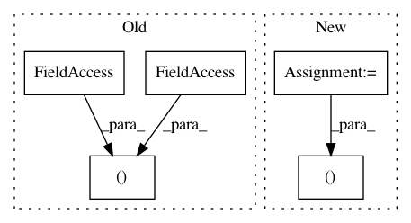

36eb9f8e99fd5e87b4969fc027467cc5c3f6d55e,softlearning/algorithms/sac.py,SAC,log_diagnostics,#SAC#Any#Any#,356
Before Change
feed_dict = self._get_feed_dict(iteration, batch)
qf, vf, td_loss = self._sess.run(
(self._qf_t, self._vf_t, self._td_loss_t), feed_dict)
logger.record_tabular("qf-avg", np.mean(qf))
logger.record_tabular("qf-std", np.std(qf))
After Change
feed_dict = self._get_feed_dict(iteration, batch)
qf1, qf2, vf, td_loss1, td_loss2 = self._sess.run(
(self._qf1_t, self._qf2_t, self._vf_t, self._td_loss1_t, self._td_loss2_t), feed_dict)
logger.record_tabular("qf1-avg", np.mean(qf1))
In pattern: SUPERPATTERN
Frequency: 3
Non-data size: 5
Instances
Project Name: rail-berkeley/softlearning
Commit Name: 36eb9f8e99fd5e87b4969fc027467cc5c3f6d55e
Time: 2018-06-18
Author: azhou42@berkeley.edu
File Name: softlearning/algorithms/sac.py
Class Name: SAC
Method Name: log_diagnostics
Project Name: rail-berkeley/softlearning
Commit Name: 6f25c33d904cf31911edee142d2b1247a3eeba7b
Time: 2019-03-08
Author: kristian.hartikainen@gmail.com
File Name: examples/development/main.py
Class Name: ExperimentRunner
Method Name: _build
Project Name: rail-berkeley/softlearning
Commit Name: b6dcbf921111667f653d95c2e46fd93b6f23b6c9
Time: 2018-05-22
Author: kristian.hartikainen@gmail.com
File Name: examples/real_nvp_2d_rl_example.py
Class Name: RealNVP2dRlExample
Method Name: run